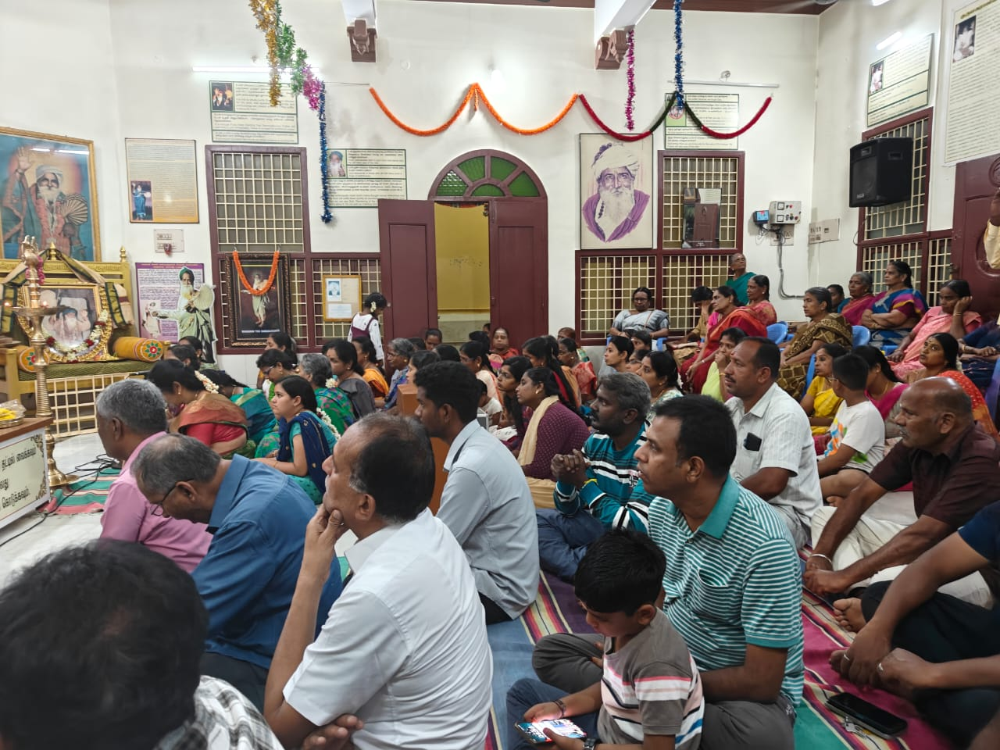
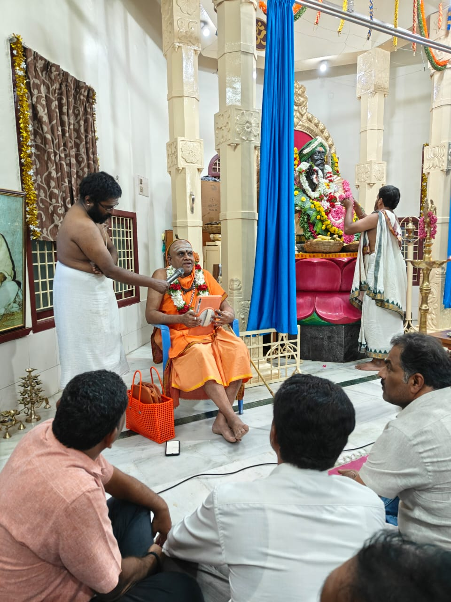
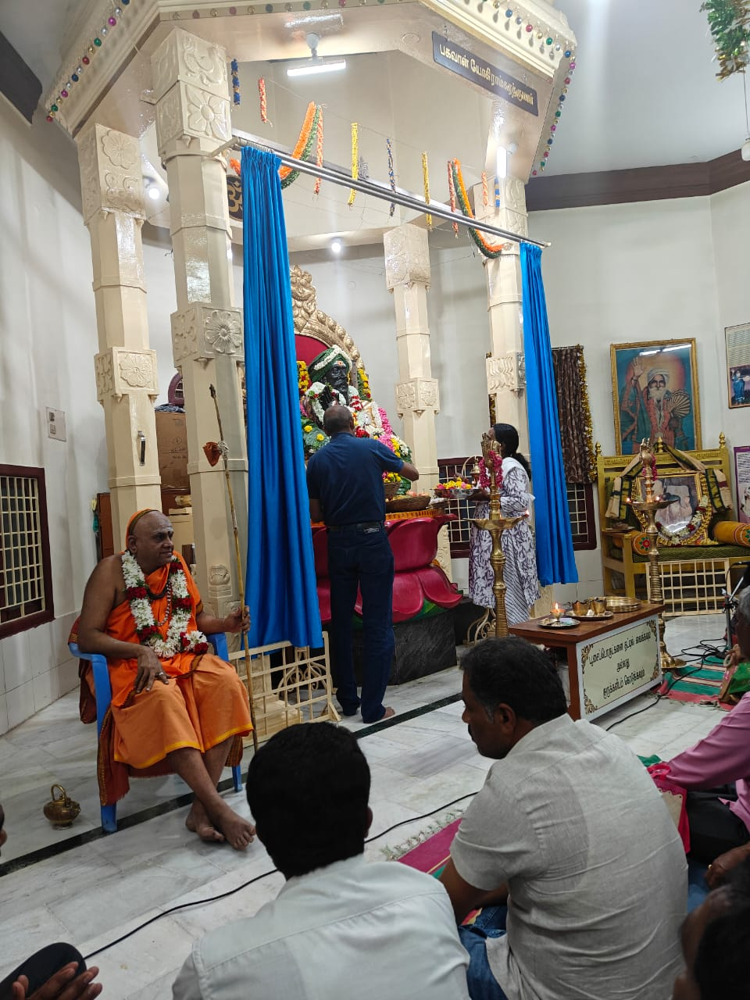
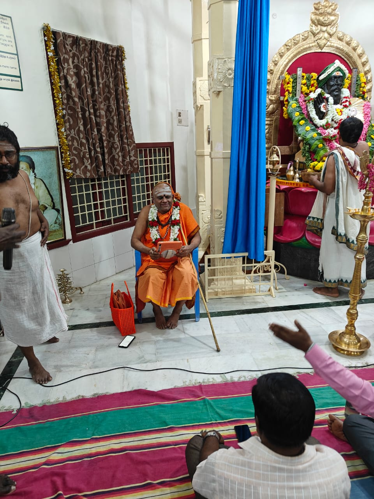
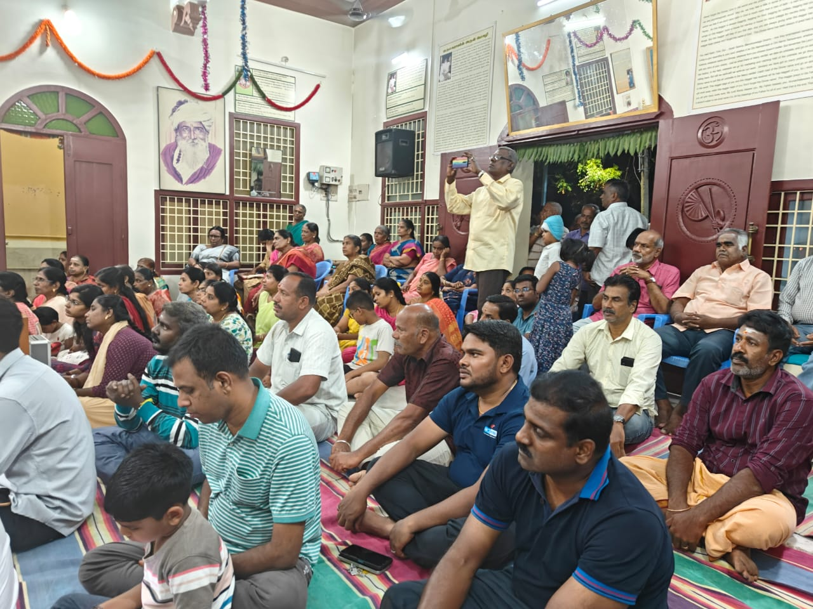

Yogi Ramsurat Kumar Ashram 2025

Event: Yogi Ramsurat Kumar Ashram 2025
Location: Hosur
Date: 13th July 2025
Time: 6:00 PM Evening
Swamiji was invited to grace the spiritual gathering on the occasion of Gurupoornima 2025 at Yogi Ramsurat Kumar Ashram, Hosur. Swamiji also gave an Anugraha Bhashanam to mark the special occasion.
Gurupoornima is a sacred day dedicated to honoring and expressing gratitude to spiritual teachers. The event at Yogi Ramsurat Kumar Ashram was filled with devotion and spiritual energy as devotees gathered to receive blessings from Guhai Swamiji.
The Anugraha Bhashanam (blessing speech) delivered by Swamiji emphasized the importance of guru-disciple relationship and the spiritual path. The attendees were deeply moved by Swamiji's words of wisdom and divine presence.




